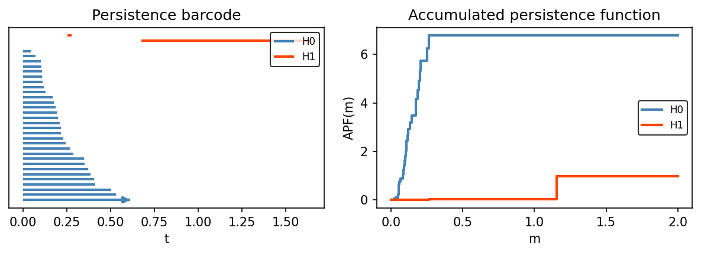
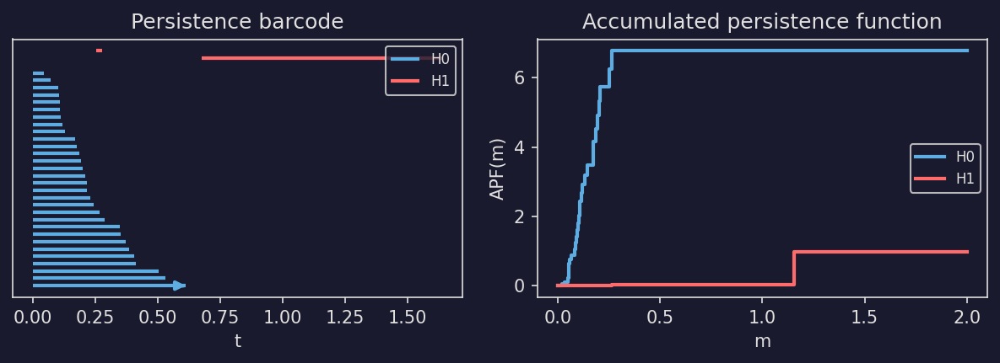
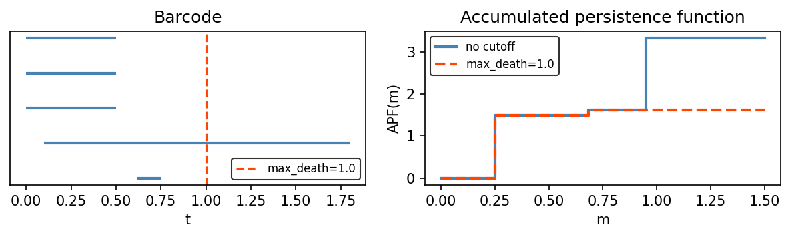
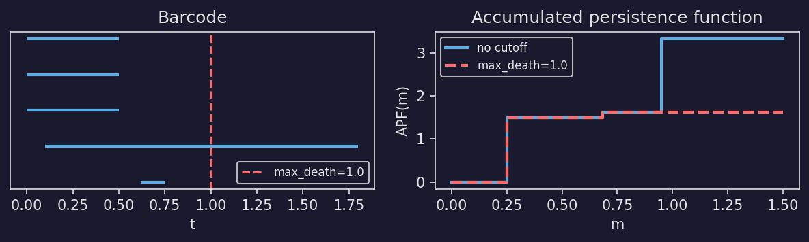

Persistent Homology#
This guide covers the persistent homology pipeline in stablebear: going from point cloud data to persistence barcodes to stable rank functions, and using those functions for downstream analysis.
Background#
Persistent homology is a tool from Topological Data Analysis (TDA) that captures the “shape” of data at multiple scales. Given a set of points (a point cloud), persistent homology tracks the appearance and disappearance of topological features – connected components, loops, voids, etc. – as a scale parameter increases.
The output is a persistence barcode: a collection of intervals \([b_i, d_i)\), where each interval records the birth \(b_i\) and death \(d_i\) of a topological feature. Features that persist over a wide range of scales are considered significant, while short-lived features are often regarded as noise.
stablebear provides three functional summaries of persistence barcodes, all of which are piecewise constant functions:
The (1d) stable rank counts, for each threshold \(t\), how many bars have length at least \(t\) [1][2][3].
The Betti curve counts, for each filtration value \(t\), how many bars are alive at \(t\) (see, e.g., [4][5]).
The accumulated persistence function (APF) sums, for each mean age \(m\), the lifetimes of all bars whose midpoint is at most \(m\) [6].
Because these summaries are PCFs, they fit naturally into stablebear’s tensor framework, enabling efficient computation of distances and means over collections of barcodes.
The pipeline#
A typical TDA workflow in stablebear follows three steps:
Point clouds – Organize your data into a tensor of point clouds
Barcodes – Compute persistent homology to get persistence barcodes
Functional summaries – Convert barcodes to PCFs (stable ranks, Betti curves, APFs, etc.) for further analysis
Point clouds ──> Barcodes ──> Functional summaries (PCFs)
│
├── distances (pdist)
├── means (mean)
└── norms (lp_norm)
Step 1: Point clouds#
Point clouds are stored in PointCloudTensor. Each element of the tensor is a point cloud, represented internally as an \(n \times d\) numeric array where \(n\) is the number of points and \(d\) is the ambient dimension.
Create a tensor and assign point clouds as NumPy arrays:
import stablebear as sb
import numpy as np
# A tensor that will hold 5 point clouds
pclouds = sb.zeros((5,), dtype=sb.pcloud64)
# Assign random point clouds (varying number of points, 3-dimensional)
for i in range(5):
n_points = np.random.randint(20, 100)
pclouds[i] = np.random.randn(n_points, 3)
Point clouds in the same tensor can have different numbers of points and, in principle, different dimensions, though in practice it is most common for all point clouds to share the same ambient dimension.
Higher-dimensional tensors work as well:
# A 10 x 20 grid of point clouds
pclouds = sb.zeros((10, 20), dtype=sb.pcloud64)
Step 2: Computing persistent homology#
compute_persistent_homology() takes a tensor of point clouds and returns a tensor of persistence barcodes. Barcode computation is performed using Ripser [7] under the hood:
from stablebear import persistence
bcs = persistence.compute_persistent_homology(pclouds, max_dim=1)
The max_dim parameter controls the highest homology dimension computed. With max_dim=1, the function computes \(H_0\) (connected components) and \(H_1\) (loops).
The output tensor has one extra dimension appended, of size max_dim + 1. For example:
Input shape
(5,)withmax_dim=1produces output shape(5, 2)Input shape
(10, 20)withmax_dim=2produces output shape(10, 20, 3)
To access the \(H_n\) barcode for a specific point cloud, index with the point cloud’s position followed by n:
bc_H0 = bcs[3, 0] # H0 barcode of point cloud 3
bc_H1 = bcs[3, 1] # H1 barcode of point cloud 3
Each element is a Barcode object.
Input flexibility#
compute_persistent_homology also accepts:
A single
PointCloudorFloatTensor(interpreted as a single point cloud)A plain NumPy array (interpreted as a single point cloud)
A
DistanceMatrix(precomputed pairwise distances for a single data set)A
DistanceMatrixTensor(a tensor of precomputed distance matrices)
# From a NumPy array directly
points = np.random.randn(50, 3)
bcs = persistence.compute_persistent_homology(points, max_dim=1)
When the input is a distance matrix, the distance_type parameter is
ignored because distances are already provided:
from scipy.spatial.distance import pdist, squareform
import stablebear as sb
from stablebear import persistence
points = np.random.randn(50, 3)
D = squareform(pdist(points))
dm = sb.DistanceMatrix(50, dtype=sb.float64)
for i in range(50):
for j in range(i):
dm[i, j] = D[i, j]
bcs = persistence.compute_persistent_homology(dm, max_dim=1)
Options#
The function supports the following options:
distance_type– The distance metric used between points. Currently onlyDistanceType.Euclidean(the default). Ignored when the input is a distance matrix.complex_type– The simplicial complex construction. Currently onlyComplexType.VietorisRips(the default).reduced– IfTrue, compute reduced homology. IfFalse(the default), an essential[0, inf)bar is added to \(H_0\) representing the single connected component that never dies. This matches the convention used by most TDA textbooks.verbose– Print progress information (defaultFalse).
Step 3: Functional summaries#
Persistence barcodes can be converted to piecewise constant functions for downstream analysis. Because the results are PCFs, they fit naturally into stablebear’s tensor framework, enabling distances, means, and norms.
Stable ranks#
barcode_to_stable_rank() converts barcodes into
stable rank PCFs. The stable rank counts, for each threshold \(t\), the
number of bars with length (death minus birth) strictly greater than \(t\)
[1]:
sranks = persistence.barcode_to_stable_rank(bcs)
The output tensor has the same shape as the input.


Show code
def plot_tda_pipeline(h0_color="steelblue", h1_color="orangered"):
from stablebear import persistence
from stablebear.plotting import plot_barcode
# 1. Noisy circle (clear H1 topology)
rng = np.random.RandomState(10)
theta = rng.uniform(0, 2 * np.pi, 30)
r = 1.0 + rng.normal(0, 0.15, 30)
points = np.column_stack([r * np.cos(theta), r * np.sin(theta)]).astype(np.float64)
# 2. Compute persistent homology
bcs = persistence.compute_persistent_homology(points, max_dim=1, verbose=False)
bc_h0, bc_h1 = bcs[0], bcs[1]
# 3. Convert to stable rank
sranks = persistence.barcode_to_stable_rank(bcs)
fig, (ax1, ax2, ax3) = plt.subplots(1, 3, figsize=(10, 3),
gridspec_kw={"width_ratios": [1, 1, 1.2]})
# Left: point cloud
ax1.scatter(points[:, 0], points[:, 1], s=15, color="grey", edgecolors="black",
linewidths=0.5)
ax1.set_aspect("equal")
ax1.set_title("Point cloud")
# Middle: persistence diagram (via persim)
import persim
persim.plot_diagrams(
[np.asarray(bc_h0), np.asarray(bc_h1)],
ax=ax2, legend=True, show=False,
)
legend = ax2.get_legend()
legend.get_frame().set_alpha(0)
fg = ax2.xaxis.label.get_color()
for text in legend.get_texts():
text.set_color(fg)
for line in ax2.get_lines():
line.set_color(fg)
ax2.set_title("Persistence diagram")
# Right: stable rank
plotpcf(sranks[0], ax=ax3, max_time=2, color=h0_color, linewidth=2,
label="H0")
plotpcf(sranks[1], ax=ax3, max_time=2, color=h1_color, linewidth=2,
label="H1")
ax3.set_xlabel("t")
ax3.set_ylabel("rank")
ax3.set_title("Stable rank")
leg3 = ax3.legend(fontsize=8)
leg3.get_frame().set_alpha(0)
for text in leg3.get_texts():
text.set_color(fg)
fig.tight_layout(w_pad=1.5)
return fig
Betti curves#
barcode_to_betti_curve() converts barcodes into
Betti curves. The Betti curve counts, for each filtration value \(t\), the
number of bars alive at \(t\) (i.e., bars with birth \(\leq t <\)
death):
bettis = persistence.barcode_to_betti_curve(bcs)
The output tensor has the same shape as the input.


Show code
def plot_betti_pipeline(h0_color="steelblue", h1_color="orangered"):
from stablebear import persistence
from stablebear.plotting import plot_barcode
# 1. Noisy circle
rng = np.random.RandomState(10)
theta = rng.uniform(0, 2 * np.pi, 30)
r = 1.0 + rng.normal(0, 0.15, 30)
points = np.column_stack([r * np.cos(theta), r * np.sin(theta)]).astype(np.float64)
# 2. Compute persistent homology
bcs = persistence.compute_persistent_homology(points, max_dim=1, verbose=False)
bc_h0, bc_h1 = bcs[0], bcs[1]
# 3. Convert to Betti curves
bettis = persistence.barcode_to_betti_curve(bcs, verbose=False)
fig, (ax1, ax2, ax3) = plt.subplots(1, 3, figsize=(10, 3),
gridspec_kw={"width_ratios": [1, 1, 1.2]})
# Left: point cloud
ax1.scatter(points[:, 0], points[:, 1], s=15, color="grey",
edgecolors="black", linewidths=0.5)
ax1.set_aspect("equal")
ax1.set_title("Point cloud")
# Middle: persistence barcode
y = plot_barcode(bc_h0, ax=ax2, color=h0_color, linewidth=2, label="H0")
plot_barcode(bc_h1, ax=ax2, y_offset=y + 1, color=h1_color, linewidth=2,
label="H1")
ax2.set_yticks([])
ax2.set_xlabel("t")
ax2.set_title("Persistence barcode")
ax2.legend(fontsize=8)
# Right: Betti curves
plotpcf(bettis[0], ax=ax3, max_time=2, color=h0_color, linewidth=2,
label="H0")
plotpcf(bettis[1], ax=ax3, max_time=2, color=h1_color, linewidth=2,
label="H1")
ax3.set_xlabel("t")
ax3.set_ylabel("count")
ax3.set_title("Betti curve")
ax3.legend(fontsize=8)
fig.tight_layout(w_pad=1.5)
return fig
Accumulated persistence functions#
barcode_to_accumulated_persistence() converts
barcodes into accumulated persistence functions (APFs) [6]. For each mean
age \(m\), the APF sums the lifetimes of all bars whose midpoint is at
most \(m\):
where \(N\) is the number of bars, \(\ell_i = d_i - b_i\) is the lifetime, \(m_i = (b_i + d_i)/2\) is the midpoint of bar \(i\), and \(\mathbf{1}(\cdot)\) is the indicator function.
from stablebear import persistence
apfs = persistence.barcode_to_accumulated_persistence(bcs)




Show plotting code
def plot_apf_example(h0_color="steelblue", h1_color="orangered"):
from stablebear import persistence
from stablebear.plotting import plot_barcode
# Noisy circle
rng = np.random.RandomState(10)
theta = rng.uniform(0, 2 * np.pi, 30)
r = 1.0 + rng.normal(0, 0.15, 30)
points = np.column_stack([r * np.cos(theta), r * np.sin(theta)]).astype(np.float64)
bcs = persistence.compute_persistent_homology(points, max_dim=1, verbose=False)
bc_h0, bc_h1 = bcs[0], bcs[1]
apfs = persistence.barcode_to_accumulated_persistence(bcs, verbose=False)
fig, (ax1, ax2) = plt.subplots(1, 2, figsize=(8, 3))
# Left: barcode
y = plot_barcode(bc_h0, ax=ax1, color=h0_color, linewidth=2, label="H0")
plot_barcode(bc_h1, ax=ax1, y_offset=y + 1, color=h1_color, linewidth=2,
label="H1")
ax1.set_yticks([])
ax1.set_xlabel("t")
ax1.set_title("Persistence barcode")
ax1.legend(fontsize=8)
# Right: APF
plotpcf(apfs[0], ax=ax2, max_time=2, color=h0_color, linewidth=2, label="H0")
plotpcf(apfs[1], ax=ax2, max_time=2, color=h1_color, linewidth=2, label="H1")
ax2.set_xlabel("m")
ax2.set_ylabel("APF(m)")
ax2.set_title("Accumulated persistence function")
ax2.legend(fontsize=8)
fig.tight_layout(w_pad=1.5)
return fig
An optional max_death parameter excludes bars whose death time exceeds
a given threshold. This corresponds to Equation (2) in [6], where a
filtration cutoff \(T\) limits the computation to bars with
\(d_i \leq T\):
apfs = persistence.barcode_to_accumulated_persistence(bcs, max_death=25.0)




Show plotting code
def plot_apf_max_death(color1="steelblue", color2="orangered"):
from stablebear.persistence import Barcode, barcode_to_accumulated_persistence
from stablebear.plotting import plot_barcode
bc = Barcode(np.array([
[0.0, 0.5], [0.0, 0.5], [0.0, 0.5],
[0.62, 0.75], [0.1, 1.8],
], dtype=np.float64))
apf_all = barcode_to_accumulated_persistence(bc)
apf_cut = barcode_to_accumulated_persistence(bc, max_death=1.0)
fig, (ax1, ax2) = plt.subplots(1, 2, figsize=(8, 2.5))
# Left: barcode with cutoff line
plot_barcode(bc, ax=ax1, color=color1, linewidth=2)
ax1.axvline(1.0, color=color2, linestyle="--", linewidth=1.5, label="max_death=1.0")
ax1.set_yticks([])
ax1.set_xlabel("t")
ax1.set_title("Barcode")
ax1.legend(fontsize=8, loc="lower right")
# Right: APF with and without cutoff
plotpcf(apf_all, ax=ax2, max_time=1.5, color=color1, linewidth=2,
label="no cutoff")
plotpcf(apf_cut, ax=ax2, max_time=1.5, color=color2, linewidth=2,
linestyle="--", label="max_death=1.0")
ax2.set_xlabel("m")
ax2.set_ylabel("APF(m)")
ax2.set_title("Accumulated persistence function")
ax2.legend(fontsize=8)
fig.tight_layout(w_pad=1.5)
return fig
Using functional summaries#
Since stable ranks and Betti curves are PCFs, they are stored in PCF tensors and support all of stablebear’s standard operations:
import stablebear as sb
from stablebear.plotting import plot as plotpcf
import matplotlib.pyplot as plt
# Plot the H1 stable ranks
plotpcf(sranks[:, 1])
plt.title('H1 stable ranks')
plt.show()
# Compute distances between H1 stable ranks
D = sb.pdist(sranks[:, 1], verbose=False)
# Compute the mean H1 stable rank
avg = sb.mean(sranks[:, 1], dim=0)
Complete example#
The following example creates a multidimensional tensor of random point clouds, computes persistent homology, converts to stable ranks, and visualizes the result:
import stablebear as sb
from stablebear import persistence
from stablebear.plotting import plot as plotpcf
import numpy as np
import matplotlib.pyplot as plt
shape = (10, 20)
pcloud_dim = 4
# Create and fill point cloud tensor
pclouds = sb.zeros(shape, dtype=sb.pcloud64)
for i in range(shape[0]):
for j in range(shape[1]):
n_points = np.random.randint(20, 100)
pclouds[i, j] = np.random.randn(n_points, pcloud_dim)
# Compute persistent homology (H0 and H1)
bcs = persistence.compute_persistent_homology(pclouds, max_dim=1)
print(bcs.shape) # (10, 20, 2)
# Convert to stable ranks
sranks = persistence.barcode_to_stable_rank(bcs)
print(sranks.shape) # (10, 20, 2)
# Plot H1 stable ranks for the first row of point clouds
plotpcf(sranks[0, :, 1])
plt.title('H1 stable ranks for pclouds[0, :, :]')
plt.show()
# Distance matrix between H1 stable ranks in the first row
D = sb.pdist(sranks[0, :, 1], verbose=False)
The Barcode class#
Individual barcodes are represented by Barcode. A barcode can be constructed from an \(n \times 2\) NumPy array of (birth, death) pairs:
from stablebear.persistence import Barcode
bc = Barcode(np.array([[0.0, 1.5],
[0.2, 3.0],
[0.5, 0.8]]))
You can also convert a single barcode to a stable rank:
from stablebear.persistence import barcode_to_stable_rank
sr = barcode_to_stable_rank(bc)
# sr is a Pcf
Comparing barcode tensors#
Use is_isomorphic_to() to compare
every aligned pair of barcodes and return one boolean. Bar order within each
barcode does not matter:
import numpy as np
from stablebear.persistence import Barcode, BarcodeTensor
barcodes = BarcodeTensor([Barcode(np.array([
[0.0, 1.0],
[0.0, 2.0],
]))])
reordered = BarcodeTensor([Barcode(np.array([
[0.0, 2.0],
[0.0, 1.0],
]))])
barcodes.is_isomorphic_to(reordered) # True
The tensors must have the same outer shape and dtype; there is no broadcasting.
Endpoint comparisons use atol=1e-8 and rtol=1e-5 by default. Pass
atol=0, rtol=0 for exact comparison. Infinite endpoints must match exactly.